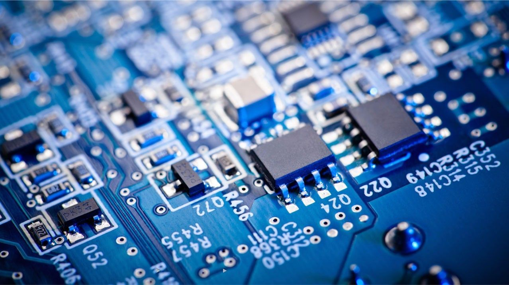
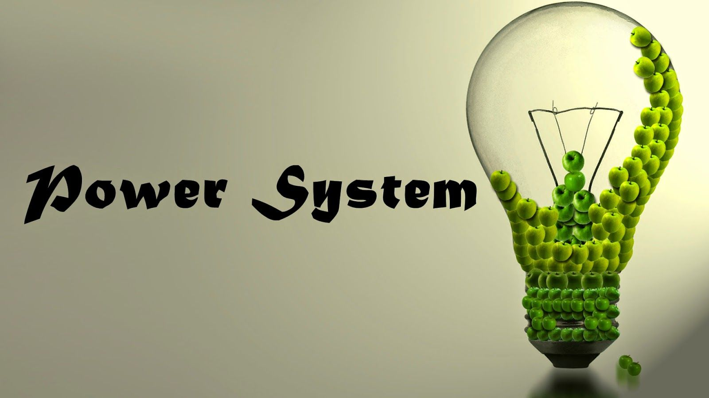

The Department of Computer Science and Engineering which offers PG programme in 2013.
The department has provided a well-equipped computer lab with latest computer software. The Laboratories are installed with broad-band internet facility.
The objective of the department is to guide the students to meet the challenges in upcoming technology and diverging career opportunities with subject understanding and practical implementation of technologies through interactive classroom
lecture and experimental activities.
The department is fully Equipped with campus wifi and Internet facilities
Vision
Producing competent computer engineers with a strong background in the latest trends and technology to achieve academic excellence and to become pioneers in software and hardware products with an ethical approach to serve the society.
Mission
To provide quality education by inculcating strong fundamentals in basic science , mathematics and engineering concepts through the state of the art facilities
To provide the learning ambience that helps the students to enhance problem solving skills and to inculcate in them the habit of continuous learning in their domain of interest.
To serve the society by providing insight solutions to the real world problems by employing the latest trends of computing technology with strict adherence to professional and ethical responsibilitie
PROGRAM OUTCOMES (POs)
Engineering Graduates will be able to:
Engineering knowledge: Apply the knowledge of mathematics, science, engineering fundamentals, and an engineering specialization to the solution of complex engineering problems.
Problem analysis: Identify, formulate, review research literature, and analyze complex engineering problems reaching substantiated conclusions using first principles of mathematics, natural sciences, and engineering sciences.
Design/development of solutions: Design solutions for complex engineering problems and design system components or processes that meet the specified needs with appropriate consideration for the public health and safety, and the cultural,
societal, and environmental considerations.
Conduct investigations of complex problems: Use research-based knowledge and research methods including design of experiments, analysis and interpretation of data, and synthesis of the information to provide valid conclusions.
Modern tool usage: Create, select, and apply appropriate techniques, resources, and modern engineering and IT tools including prediction and modeling to complex engineering activities with an understanding of the limitations.
The engineer and society: Apply reasoning informed by the contextual knowledge to assess societal, health, safety, legal and cultural issues and the consequent responsibilities relevant to the professional engineering practice.
Environment and sustainability: Understand the impact of the professional engineering solutions in societal and environmental contexts, and demonstrate the knowledge of, and need for sustainable development.
Ethics: Apply ethical principles and commit to professional ethics and responsibilities and norms of the engineering practice.
Individual and team work: Function effectively as an individual, and as a member or leader in diverse teams, and in multidisciplinary settings.
Communication: Communicate effectively on complex engineering activities with the engineering community and with society at large, such as, being able to comprehend and write effective reports and design documentation, make effective
presentations, and give and receive clear instructions.
Project management and finance: Demonstrate knowledge and understanding of the engineering and management principles and apply these to one‘s own work, as a member and leader in a team, to manage projects and in multidisciplinary environments.
Life-long learning: Recognize the need for, and have the preparation and ability to engage in independent and life-long learning in the broadest context of technological change.
PROGRAM EDUCATIONAL OBJECTIVES (PEOs)
To enable graduates to pursue research, or have a successful career in academia or industries associated with Computer Science and Engineering, or as entrepreneurs.
To provide students with strong foundational concepts and also advanced techniques and tools in order to enable them to build solutions or systems of varying complexity.
To prepare students to critically analyze existing literature in an area of specialization and ethically develop innovative and research oriented methodologies to solve the problems identified.

PG COURSE: M.E. APPLIED ELECTRONICS
Vision
To be a center of excellence in innovation by educating professionals and technocrats to meet the growing Technological and socio-economic needs.
Mission
To develop the ability to utilize technology in emerging areas to address the issues and to improve the livelihood of the society
To produce Professionals who can participate in Technical progression to meet the growing global challenges
About the Course
The Post Graduate program M.E. Applied Electronics was started in the year 2012 under the Department of Electronics and Communication Engineering with an intake of 18. This two-year PG program delivers an extensive knowledge and imparts
students with the practical skill related to Applied Electronics. This course deals with application aspect of programming paradigm and diverse computing environment/platform. The course is designed in such a way to connect effectively
the technical skills, abilities and acumen of the students to transform them in to holistic engineers who develop tailor made/customized application/software that encourages multi-pronged approach. The curriculum in Applied Electronics
Engineering lays greater emphasis on deep understanding about Advancements in Digital Signal Processing, Microprocessors and Microcontrollers, Analog ICs , computer architecture, VLSI and embedded systems.
Program Educational Objectives (PEOs):
PEO1: To enable graduates to develop solutions to real world problems in the frontier areas of Applied Electronics
PEO2: To enable the graduates to adapt to the latest trends in technology through self-learning and to pursue research to meet out he demands in industries and Academics.
PEO3: To enable the graduates to exhibit leadership skills and enhance their abilities through lifelong learning.
Program Outcomes (POs):
Engineering Knowledge: Apply the knowledge of mathematics, science, engineering fundamentals, and an engineering specialization to the solution of complex engineering problems.
Problem Analysis: Identify, formulate, review research literature, and analyze complex engineering problems reaching substantiated conclusions using first principles of mathematics, natural sciences and engineering sciences
Design/Development of Solutions: Design solutions for complex engineering problems and design systems components or processes that meet the specified needs with appropriate considerations for the public health and safety and the cultural,
societal and environmental considerations.
Conduct investigations of complex problems: Use research-based knowledge and research methods including design of experiments, analysis and interpretation of data and synthesis of the information to provide valid conclusions.
Modern tool usage: Create, select and apply appropriate techniques, resources and modern engineering and IT tools including prediction and modeling to complex engineering activities with an understanding of the limitations
The engineer and society: Apply reasoning informed by the contextual knowledge to assess societal, health, safety, legal and cultural issues and the consequent responsibilities relevant to the professional engineering practice.
Environment and Sustainability: Understand the impact of the professional engineering solutions in societal and environmental contexts and demonstrate the knowledge of and need for sustainable development.
Ethics: Apply ethical principles and commit to professional ethics and responsibilities and norms of the engineering practice
Individual and team work: Function effectively as an individual and as a member or leader in diverse teams and in multidisciplinary settings.
Communication: Communicate effectively on complex engineering activities with the engineering community and with society at large, such as, being able to comprehend and write effective report and design documentation, make effective
presentations and give and receive clear instructions.
Project Management and Finance: Demonstrate knowledge and understanding of the engineering and management principles and apply these to one’s own work, as a member and leader in a team, to manage projects and in multidisciplinary environments.
Life-long learning: Recognize the need for and have the preparation and ability to engage in independent and life-long learning in the broadest context of technological change.

Introduction to M.E. – Power Systems Engineering
M.E in Power Systems Engineering is a full-time two year post-graduate program under Department of Electrical and Electronics Engineering in Grace College of Engineering. The department admits about 24 students every year in the M.E. program.
Students are given a deeper understanding of the critical aspects of power systems, given training in analyzing and computing the integrated system of power engineering. The program curriculum qualifies candidates through theory and
lab practice along with entrusting projects which help them to gain practical knowledge of transmitting power engineering, power systems and maintaining power stability. The overall goal of the program is to adroit the students in
understanding the skills of problem-solving, calculations which can draw them better scopes in the future career. This program helps in the designing and development of projects assisting in power sector. Power System Engineering have
beneficial scope in sectors of Power Corporations, Electricity Boards, Hydro-Electricity Sectors to work as Lead System Designer, Engineering Executive, Senior Engineering Manager, Power System Engineering, Senior System Analyst, Engineering
Officer and so on.
Vision
To impart quality education, to sculpt into innovators with ethical and creative talents of aspiring young professionals in Electrical and Electronics Engineering and thereby contributing value to society and industry with high human values.
Mission
M.E. Power Systems Engineering of Grace College of Engineering aims to realize the vision through the following mission:
Empower students with the impact of Electrical and Electronics Engineering in the global scenario and the challenges of Electrical based industries and organizations.
Build team ethics, leadership qualities and to cater to the overall development of the students in professional and research-oriented fields.
Impart quality and value-based education which enables the students to meet the growing challenges in the industry.
Provide suitable forums to enhance the creative talents of students and faculty members.
Inculcate moral and ethical values among the faculty and students.
Programme Outcomes:
On successful completion of the programme,
Graduates will be able to demonstrate the principles and practices of the electrical power industry regarding generation, transmission, distribution and electrical machines and their controls.
Graduates will be able to apply their knowledge of electrical power principles, as well as mathematics and scientific principles, to new applications in electrical power.
Graduates will be able to perform, analyze, and apply the results of experiments to electrical power application improvements.
Graduates will be able to look at all options in design and development projects and creativity and choose the most appropriate option for the current project.
Graduates will function effectively as a member of a project team.
Graduates will be able to identify problems in electrical power systems, analyze the problems, and solve them using all of the required and available resources.
Graduates will be able to effectively communicate technical project information in writing or in personal presentation and conversation.
Graduates will be engaged in learning the new practices, principles, and techniques of the electrical power industry.
Graduates will be able to work on application software packages of power system analysis and design.
Graduates will develop indigenous software packages for power system planning and operational problems of utilities.
Programme Educational Objectives :
M.E. Power Systems Engineering curriculum is designed to empower the graduates by having attitude and knowledge
TO Promote their in the electrical power industry/research organization/teaching.
To provide good foundation in mathematics and computational technology ,to analyze and solve problems encountered in electrical power industry.
Pursue lifelong learning and continuous improvement of their knowledge in the electrical power industry.
To understand the national and global issues related to the electrical power industry and to considerate the impact of these issues on the environment and within different cultures.
Apply the highest professional and ethical standards to their activities in the electrical power industry.
To impart the students with knowledge in technical advancements and future developments in power generation, control and management as well as with alternate and new energy resources.